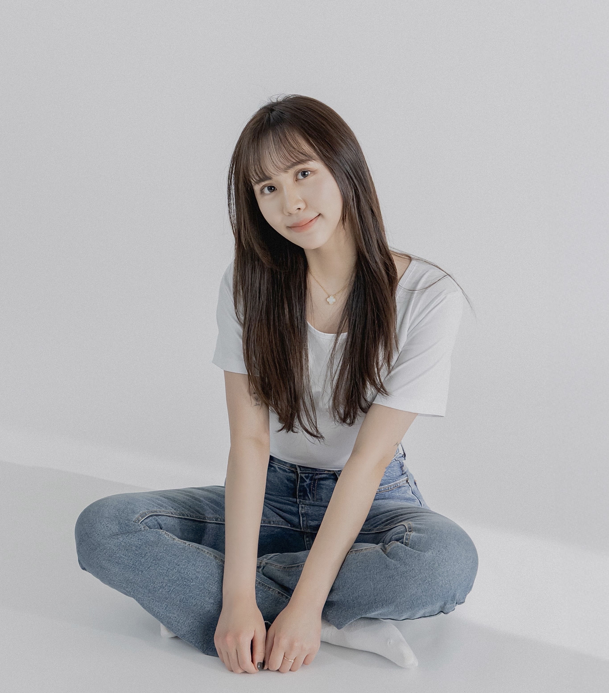
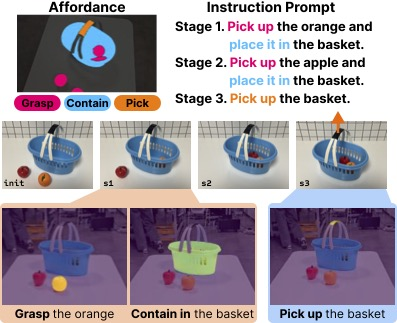
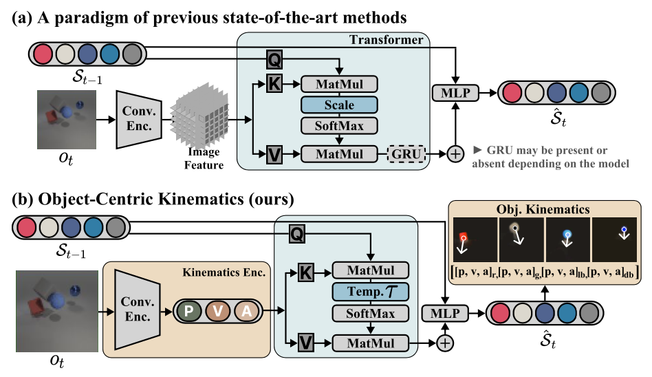
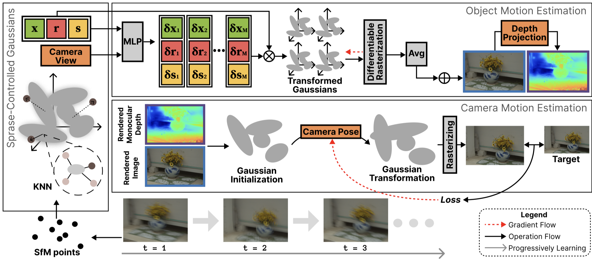
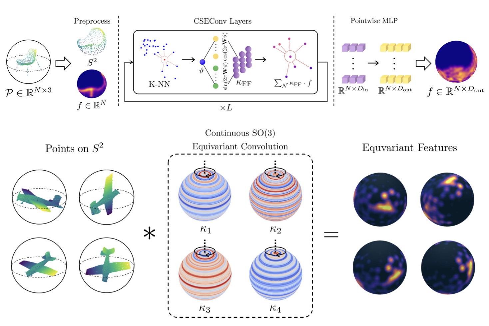
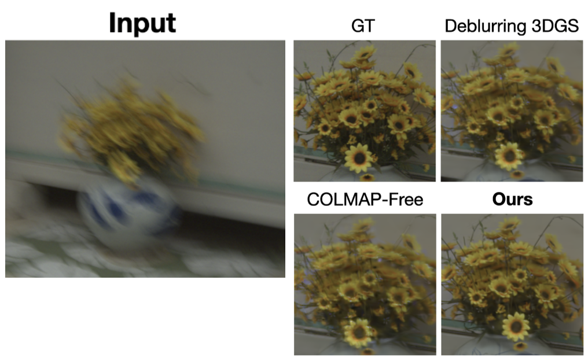
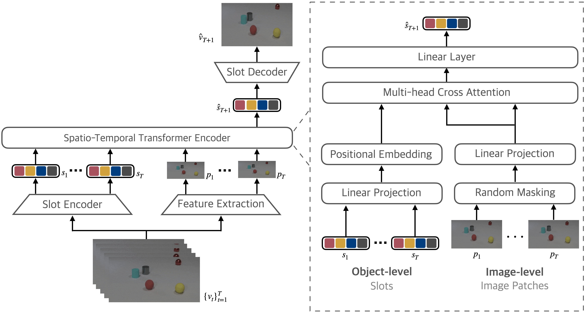
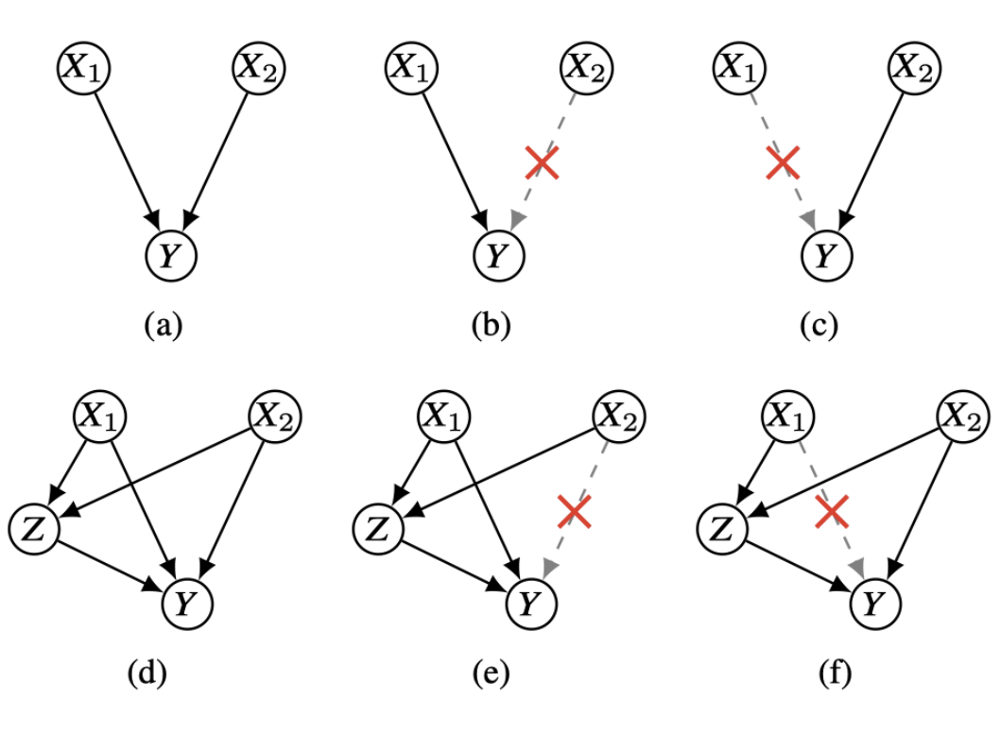

|
Yeon-Ji Song 송연지 I am a PhD candidate at the Seoul National University (SNU) Biointelligence Lab, supervised by Byoung-Tak Zhang. Previously, I graduated from the Hong Kong University of Science and Technology (HKUST) with a Bachelor's in Electronic and Computer Engineering. During my undergrad, I completed my Bachelor's thesis on Autonomous Navigation and Object Detection with Reinforcement Learning in RAM-Lab advised by Prof. Ming Liu. |
 |
News |
- [2025.06] One paper is accepted at ICCV 2025!🔥
- [2025.05] One paper is accepted at CVPR 2025 Workshop!✨
- [2024.12] I am selected as a Samsung Industrial-Academic Scholarship recipient!🙌🏻
- [2023.11] One paper is accepted at NeurIPS 2023 Workshop!✨
ResearchI am interested in 3D vision, representation learning, and generative AI. Specifically, learning representations in a self-supervised and structured way. Most of my work is about inferring the physical world from images or methods that use domain-specific knowledge of geometry and graphics. I enjoy being inspired by neuroscience to understand human intelligence of AI. |
|
|
N4DGS: Newtonian-based Dynamic-Static Decomposition for 4D Gaussian Splatting
Yeon-Ji Song, Junoh Lee, Kiyoung Kwon, Jin-Hwa Kim†, Byoung-Tak Zhang† To be updated |
|  |
AffoRo-GS: Few-shot 3D Affordance Learning for Open-vocabulary Robotic Manipulation with Gaussian Splatting
Hyunseo Kim, Yeon-Ji Song, Minsu Lee†, Byoung-Tak Zhang† Under review We introduce an efficient approach to 3D affordance learning connected to action verbs, leveraging few-shot affordance labels. Given affordance-labeled images captured from a sparse set of viewpoints, our model learns 2D visual features that are tightly aligned with affordance-related text embeddings. These visual features are subsequently uplifted into 3D Gaussians to facilitate multi-stage robotic manipulation. |
|  |
OCK: Unsupervised Dynamic Video Prediction with Object-Centric Kinematics
Yeon-Ji Song, Jaein Kim*, Suhyung Choi*, Jin-Hwa Kim†, Byoung-Tak Zhang† ICCV, 2025 project page / arXiv We propose OCK, a dynamic video prediction model leveraging object-centric kinematics and object slots. We introduce a novel component named Object Kinematics that comprises explicit object motions, serving as an additional attribute beyond conventional appearance features to model dynamic scenes. |
|  |
DBMovi-GS: Motion-aware Dynamic View Synthesis from Blurry Monocular Video via Sparse-Controlled Gaussian Splatting
Yeon-Ji Song, Jaein Kim, Byoungju Kim, Byoung-Tak Zhang† CVPR NFBCC Workshop, 2025 arXiv We address the challenge of novel view synthesis from blurry inputs by generating dense 3D Gaussians, restoring sharpness, and reconstructing detailed 3D geometry of the scene affected by dynamic motion variations. |
|  |
Continuous SO(3) Equivariant Convolution for 3D Point Cloud Analysis
Jaein Kim, Heebin Yoo, Dong-Sig Han, Yeon-Ji Song, Byoung-Tak Zhang† ECCV, 2024 code / arXiv We propose CSEConv, a novel point convolution layer equivariant under continuous SO(3) actions. Its structure is founded on the framework of group theory, realizing the convolution module defined on a sphere. |
|  |
Unsupervised Visual Dynamics Learning with Multi-Object Kinematics
Yeon-Ji Song, Byoung-Tak Zhang† KSC, 2024 (Best Presentation Award) We propose a novel view synthesis method based on 3DGS that sequentially processes blurry input frames to generate new viewpoints without requiring pre-calculated camera poses. Our approach simultaneously achieves high performance in both view synthesis and camera pose estimation under dynamic conditions. |
|  |
Learning Object Appearance and Motion Dynamics with Object-Centric Representations
Yeon-Ji Song, Hyunseo Kim, Jaein Kim, Jin-Hwa Kim†, Byoung-Tak Zhang† NeurIPS CRL Workshop, 2023 arXiv Object-centric representations have emerged as a promising tool for scene decomposition by providing useful abstractions. We propose a method called Object-centric Slot Patch Transformer, which is a dynamics learning mechanism that predicts future frames in an object-centric way. |
|  |
On Discovery of Local Independence over Continuous Variables via Neural Contextual Decomposition
Inwoo Hwang, Yunhyeok Kwak, Yeon-Ji Song, Sanghack Lee†, Byoung-Tak Zhang† CLeaR, 2023 arXiv Local independence, such as context-specific independence, has primarily been studied for discrete variables despite its importance for understanding fine-grained causal relationships. We extend this concept to continuous variables by defining its properties and introducing a differentiable method for its discovery. |
|
(Last updated: Oct 2025) |